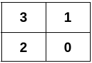
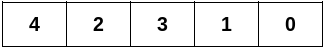
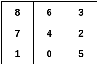

| Category | Difficulty | Likes | Dislikes |
|---|---|---|---|
| Algorithms | Hard | 80 | 12 |
array | hash-table | graph | matrix
You are given a 2D integer array edges representing an undirected graph having n nodes, where edges[i] = [ui, vi] denotes an edge between nodes ui and vi.
Construct a 2D grid that satisfies these conditions:
0 to n - 1 in its cells, with each node appearing exactly once.edges.It is guaranteed that edges can form a 2D grid that satisfies the conditions.
Return a 2D integer array satisfying the conditions above. If there are multiple solutions, return any of them.
Example 1:
Input: n = 4, edges = [[0,1],[0,2],[1,3],[2,3]]
Output: [[3,1],[2,0]]
Explanation:

Example 2:
Input: n = 5, edges = [[0,1],[1,3],[2,3],[2,4]]
Output: [[4,2,3,1,0]]
Explanation:

Example 3:
Input: n = 9, edges = [[0,1],[0,4],[0,5],[1,7],[2,3],[2,4],[2,5],[3,6],[4,6],[4,7],[6,8],[7,8]]
Output: [[8,6,3],[7,4,2],[1,0,5]]
Explanation:

Constraints:
2 <= n <= 5 * 1041 <= edges.length <= 105edges[i] = [ui, vi]0 <= ui < vi < nedges can form a 2D grid that satisfies the conditions.